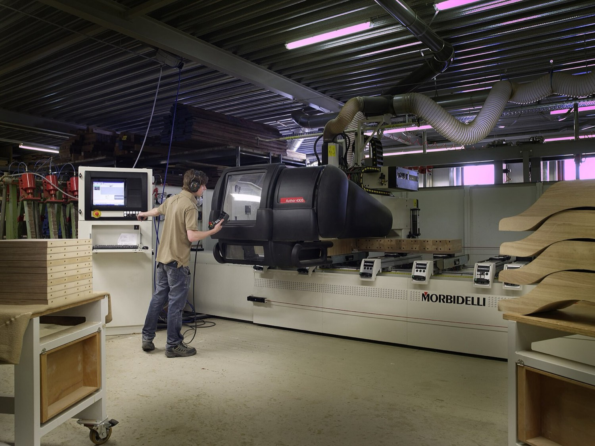
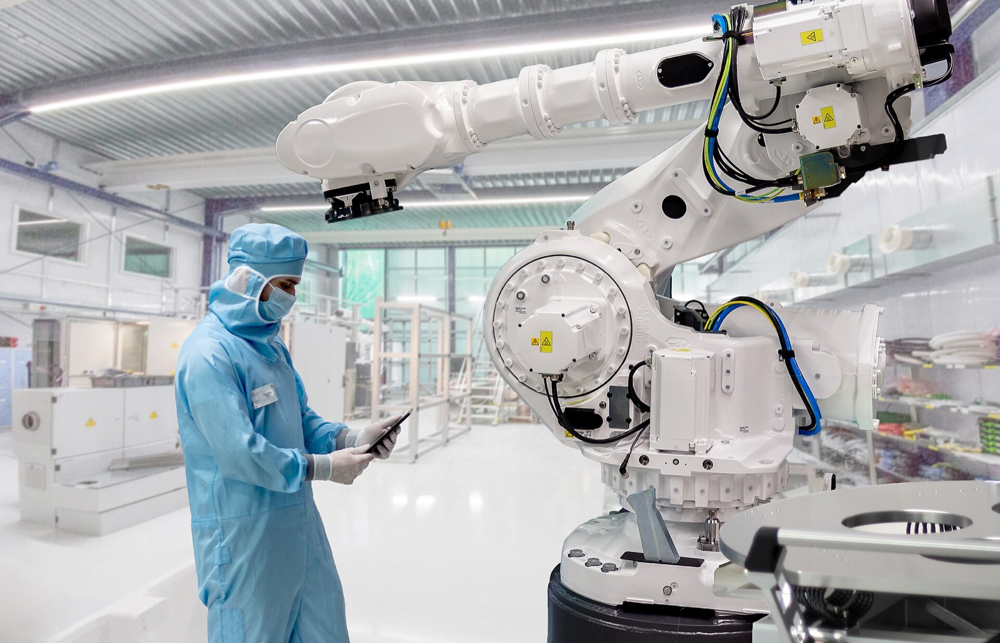
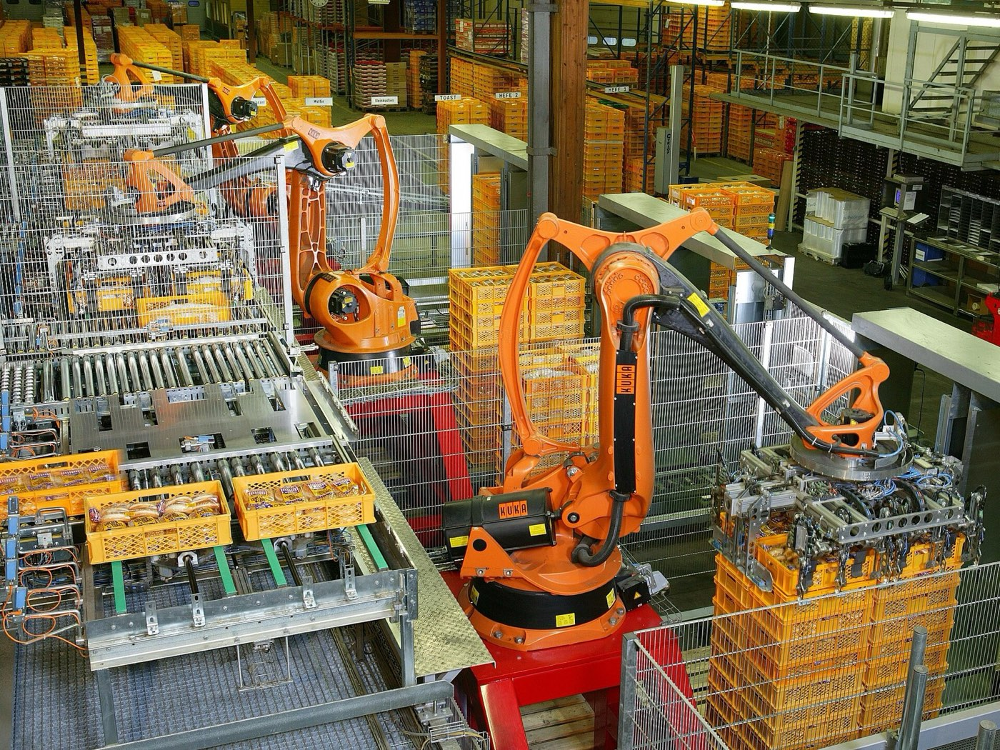
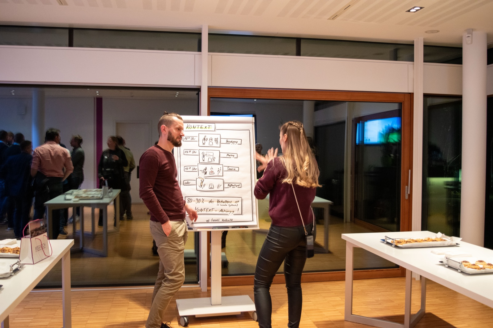

KI-SprechstundeIhre Frage, unsere ehrliche Einschätzung
Sie haben eine Idee oder einen Ablauf, der Sie aufhält? Wir klären, ob KI oder Software hilft und wie ein erster Schritt aussieht.
Zur KI-Sprechstunde35 Use Cases aus unseren Projekten: von der Automatisierung, die an einem Nachmittag steht, bis zum schlanken ERP, das Warenwirtschaft, Vertrieb und Versand verbindet.

Jedes Symbol ist ein Use Case. Klicken öffnet die Details.
Kleine, schnelle Lösungen: oft in wenigen Tagen umgesetzt, geringes Risiko, sofort spürbare Entlastung von Routinearbeit.
Vorhaben mit hohem Hebel: Sie lösen echte Engpässe in Vertrieb, Engineering, Service oder ERP und verändern Kernabläufe.
Filtern Sie nach Bereich oder Projekttyp, oder suchen Sie nach einem Stichwort wie „Angebot“, „Lager“, „SAP“ oder „lokal“.
Einzelne Apps lösen einzelne Probleme. Damit daraus keine neuen Insellösungen werden, laufen unsere Anwendungen als Bausteine in einem gemeinsamen Portal: eine Anmeldung, ein Datenstamm, beliebig viele Werkzeuge.
Zwei Begriffe, die oft durcheinandergehen. Der Unterschied liegt darin, wer den nächsten Schritt bestimmt: der Mensch oder die KI.
Software, die Ihr Team bei einer Aufgabe führt und unterstützt.
Der Assistent reagiert auf Eingaben, prüft, rechnet und macht Vorschläge, auch mit KI. Den nächsten Schritt und die Entscheidung trifft immer der Mensch.
KI, die ein Ziel selbstständig verfolgt.
Der Agent plant die Schritte, wählt Werkzeuge, recherchiert, schreibt und prüft sein Ergebnis selbst. Der Mensch legt das Ziel fest und gibt am Ende frei.
In unseren Projekten haben Agenten klare Grenzen: Sie arbeiten mit den Rechten einer Person, protokollieren ihr Handeln und versenden oder buchen nichts ohne menschliche Freigabe.
Software wirkt nur, wenn Menschen sie nutzen und weiterentwickeln. Deshalb begleiten wir Ihr Team in drei Stufen: aus Anwendern werden Mitgestalter.

Die Wirkung bleibt, auch wenn wir nicht mehr da sind.
Recherche, Texte, Zusammenfassungen, Dokumentenanalyse: Alle im Unternehmen nutzen KI im Arbeitsalltag, mit klaren Spielregeln für vertrauliche Daten.
Wiederkehrende Aufgaben werden zu Workflows: E-Mails, Ablage, Kontakte, Berichte. Gebaut von den Leuten, die den Ablauf am besten kennen.
Mit KI-gestützter Entwicklung erweitert Ihr Team Basis-Software und Bausteine der G&P Suite eigenständig und baut KI-Agenten mit menschlicher Freigabe.
Sechs Grundsätze, die sich durch jeden dieser Use Cases ziehen, vom kleinen Workflow bis zum ERP.
Wir setzen dort an, wo Arbeit liegen bleibt: bei Kalkulation, Konstruktion oder Experten. Eine Stunde, die dort frei wird, wiegt mehr als zehn im Backoffice.
Ein erster Prototyp steht nach wenigen Tagen. Sie entscheiden auf Basis von etwas, das funktioniert, nicht auf Basis eines Lastenhefts.
KI bereitet vor, prüft und schlägt vor. Kritische Entscheidungen bleiben bei den Verantwortlichen, die Automatisierung wächst schrittweise.
Die besten Use Cases stammen von den Fachleuten, die eine Aufgabe täglich nervt. Wir erarbeiten Abläufe mit ihnen vor Ort.
Keine Funktionen auf Vorrat. Jede Zeile Code muss einen Engpass oder ein konkretes Problem lösen.
Sie erhalten den Quellcode ohne laufende Lizenzgebühren. Vertrauliche Daten bleiben auf Wunsch vollständig im Haus.

Engpassorientierte Digitalisierung, kurz eoD: erst der Engpass, dann der Ablauf, dann das Werkzeug. Ein schlechter Ablauf wird durch Software nur schneller schlecht.
Mehr zu ERP, KI & DigitalisierungProzess und Technik aus einer Hand. Wir erarbeiten den Ablauf mit Ihren Mitarbeitenden vor Ort und bauen dann das passende Werkzeug: ERP, Basis-Software oder eigene Anwendung.

Sie haben eine Idee oder einen Ablauf, der Sie aufhält? Wir klären, ob KI oder Software hilft und wie ein erster Schritt aussieht.
Zur KI-SprechstundeWir finden das passende ERP und bringen es sicher in den Betrieb, oder entwickeln Ihr vorhandenes System gezielt weiter.
Fertige Anwendungen wie unser CRM, die Ihr Team mit KI selbst weiterentwickelt, zusammengeführt in der G&P Suite.
Software für Abläufe, die Ihr ERP nicht abdeckt: vom digitalen Servicebericht bis zum KI-Assistenten für die Angebotskalkulation.
Trainings und Begleitung, damit Ihre Leute Verbesserungen selbst entdecken und umsetzen, in Ihrer Umgebung statt an Folienbeispielen.
Der Freistaat bezuschusst Softwareprojekte kleiner Betriebe. Wir entwickeln mit Ihnen die passende Lösung und unterstützen bei der Beantragung.
Zum DigitalbonusBringen Sie den Ablauf mit, der Sie am meisten aufhält. Wir sagen Ihnen ehrlich, ob ERP, Basis-Software oder eine eigene Anwendung weiterhilft, und wie der schnellste Weg zu sichtbarer Wirkung aussieht.